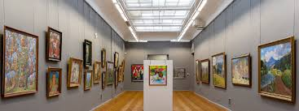

Ця галерея присвячена мистецтву в його різноманітних формах. Ми досліджуємо класику та модерн, аналізуємо значення кольорів і розглядаємо історії відомих полотен.
| Зображення | Посилання | Опис |
|---|---|---|
|
Зоряна ніч | Виразна постімпресіоністська картина, що зображує нічне небо з яскравими вихорами та зірками. Створена під час перебування ван Гога в лікарні в Сен-Ремі. |
|
Дівчина з перловою сережкою | Один із найзагадковіших портретів у світі, іноді його називають "Північною Моною Лізою". Картина зображує молоду дівчину в екзотичному тюрбані з перловою сережкою, що надає їй особливої чарівності. |
| Категорія | Деталі | |
|---|---|---|
| Назва | Рік | |
| Ренесанс | Мона Ліза | 1503 |
| Таємна вечеря | 1495 | |